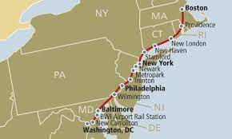
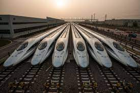
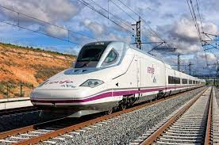
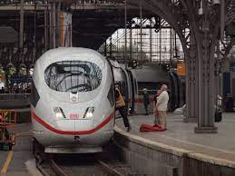
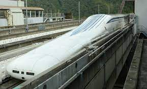
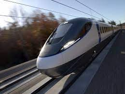
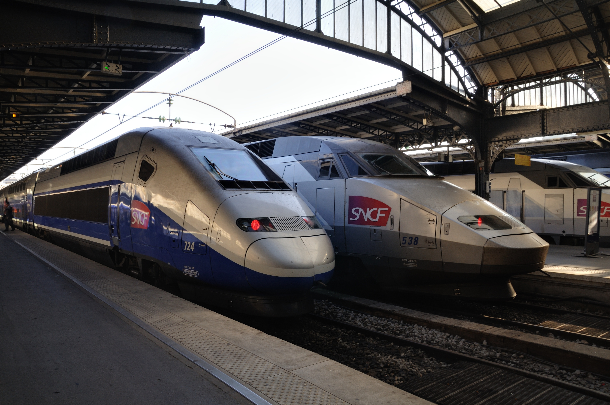

Passenger Rail in the United States
The U.S. is home to some of the most iconic public transportation systems in the world from New York's Subway to Chicago's "L" that have a storied history in their respective cities. Los Angeles was once home to the most extensive electric streetcar network in the entire world,connecting neighborhoods and people efficiently and effectively. As the automobile industry took off in the mid 1900s, many of the country's passenger rail service was torn apart and removed in favor of expansive highways and large thoroughfares to fit as many cars as possible.
This shift in transportation methods has resulted in a max exodus from the urban core of many of America's cities, changing vibrant neighborhoods into large parking lots for the use of suburban commuters. But as our climate crisis continues to impact our lives, and our country faces an immense lack of housing and growing problems with our infrastructure, the U.S. is beginning to look towards passenger rail as a more climate friendly alternative to the private automobile in order to keep Americans on the move.
High-Speed Rail in the U.S.
As other countries have developed extensive high-speed rail networks connecting their largest cities, the United States only has one corridor that meets the requirements to be considered a high-speed rail line. While meeting the technical requirements of being a high-speed line, the Amtrak Acela Corridor is plagued with problems and oftentimes travels at speeds much slower than they are capable of.
What High Speed Rail Looks Like Around The World
Many countries around the world are spending millions of dollars expanding and creating high speed rail networks, there are many countries that have constructed much more extensive networks than the one that the United States has currently.
China has the longest High Speed Rail System in the entire world, and has developed their system at a breathtaking pace in recent decades. China alone accounts for 2/3 of the worlds total high-speed railway networks.
Spain has quickly developed the longest high speed rail system in Europe, coming only second in the world to China. Connecting many of Spain's largest cities, their network has been developed rapidly since their transition to democracy in the late 1970s.
Germany has the largest economy in Europe and is home to many different high speed lines. Germany continues to invest and develop their network, recently reducing all ticket costs for riders across the country to encourage rail transport over more climate intensive methods.
Japan has long been a central image for high speed rail, pioneering the bullet train between Tokyo and Osaka and showing the world what the capabilites of high speed rail can mean for a country. Japan has remained ambitious by developing new technologies like the Maglev train to allow trains to move faster than ever before.
The United Kingdom, not well known for it's high speed rail network has recently unveiled ambitious plans to develop new high speed rail links to connect London to major cities in the Midlands and the North of England while also improving travel times to major cities in Scotland.
France has also done major work to ensure the success of it's high speed rail network. One of the major changes France has undertaken recently is by outlawing any commercial flight between cities that can be traveled by train in two and half hours or less, a move approved by the European Commision.
